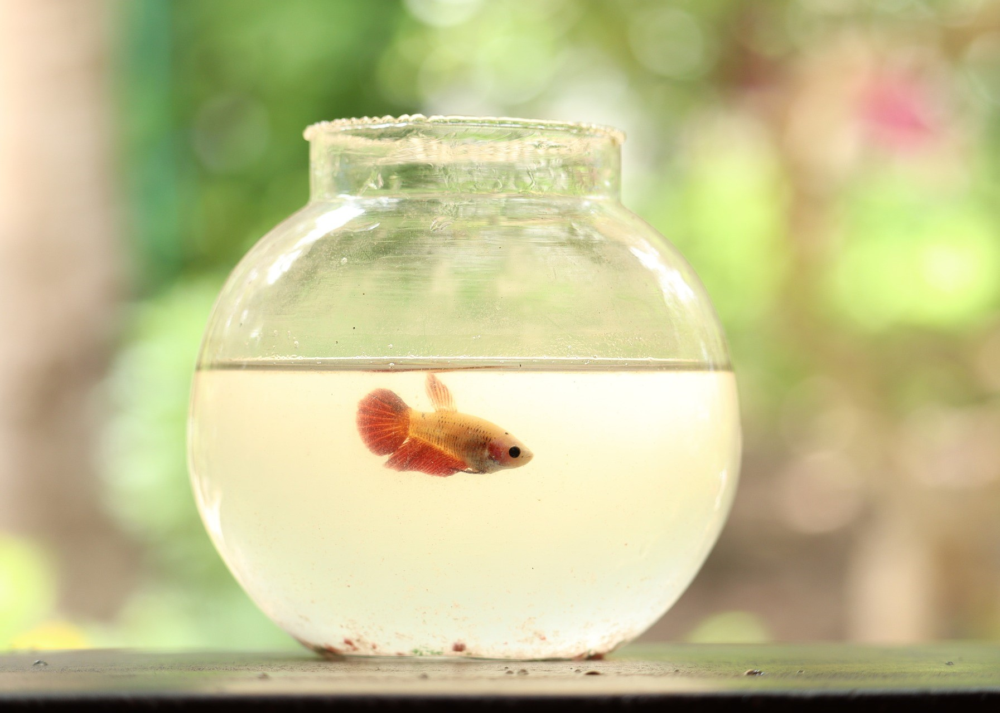
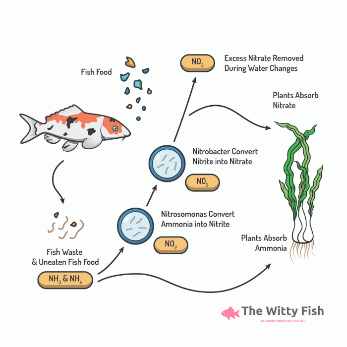

Betta fish need to be in at least a 2.5 gallon tank with an appropriately sized filter and a heater. A 5 gallon would be even better, but a 2.5 gallon is the absolute minimum for them. They are tropical, freshwater fish that need their water to be between 76 F - 80 F. Their tank will need substrate (either sand or gravel) as well as decorations to provide enrichment and hiding spots.
The tank size and the water parameters need to be ideal in order for your betta to thrive. Afterall, this is their home. Just like you would want your home to be a good size with suitable heating, your betta will also want a tank that is a good size and the right temperature for them.
Those small bowls and “betta tanks” that you see sold in many pet stores aren’t actually suitable for housing bettas (or for housing any fish for that matter). The “alternative” housing many people provide in vases for the “aesthetic” also are unsuitable and infact dangerous for your fish. Sure, they could survive in these housing environments, but they won’t be happy. In fact, for many of these housing environments they will be slowly suffocating due to a lack of oxygen and a buildup of ammonia.
You could technically survive in a small box as long as someone provides basic food and water for you, but you won’t be happy. The same applies to your betta fish.
An aquarium will not only ensure that you can provide your betta with room to swim and a proper environment to thrive, but will also allow for stable water conditions that are much easier to keep safe for your betta. This is because aquariums can hold more water and because they support the use of a filter and a heater. A filter is required in order to clean and oxygenate your water, as well as to house beneficial bacteria that allow the nitrogen cycle to take place. Without a filter there will soon be a toxic buildup of ammonia that your betta naturally produces via excretion, and the ecosystem that helps convert that ammonia into something less toxic needs a filter in order to start.

To explain in the simplest terms possible, the nitrogen cycle is the cycle that naturally occurs in nature that eventually converts toxic ammonia into less toxic nitrate. Here is a small diagram that will hopefully help it all make at least some sense.
What essentially happens is that your fish releases ammonium by pooping. That ammonium is toxic, but fortunatly there is bacteria that convert that ammonia into nitrites. Unfortunately, that nitrite is still toxic to your fish, but there is a bacteria that then converts those nitrites into nitrates. Nitrates are significantly less toxic to your fish, and that is removed from your tank through weekly water changes. If you happen to have plants in your aquarium, they will also use the nitrates produced by the bacteria to help them grow.
In order to prevent ammonia and/or nitrite burns in your fish, your tank needs the buildup of bacteria that converts ammonia into nitrite and nitrite into nitrate. The good news is that even if you simply put a fish in your tank and went about your business as normal, the nitrogen cycle is eventually bound to happen. The bad news is that by doing so your fish is at risk of being poisoned by either ammonia or nitrite. Fortunately, there are several ways to force the cycle to happen a bit faster, or at least harm your fish less in the process if you already got your fish.
This method of cycling is perhaps the safest method of cycling for your fish, but it is also a bit difficult to start and to maintain. However, for the health of your fish this is one of the recommended methods for cycling.
The cycle begins by you manually adding ammonia and a bottled bacteria starter to your tank. You can either do this by adding pure ammonia (which is available in pet stores for the purpose of cycling your aquarium) or by throwing in fish food that will decay and produce ammonia in the process. As the levels of ammonia rises into what would normally be dangerous levels for any fish, ammonia eating bacteria will soon appear to eat the ammonia and release nitrites. You will still keep adding ammonia to your tank in order to make sure that these bacteria remain fed, and the nitrite level will then spike to what would be dangerous levels for any fish. Soon after, nitrite eating bacteria will appear, and they will then release nitrates into the water. When these appear, what should theoretically happen is that your ammonia and nitrite levels should reduce to zero, and your nitrate levels should be sky high. These readings from an aquarium testing kit will indicate that your tank has finished cycling. After a water change, your tank will be ready for fish.
There are some disadvantages to using this method of cycling. For one, this method can take a very long time. Sometimes it can take several months. Another disadvantage is if you have live plants in your aquarium, the presence of these plants will make it harder to tell whether or not your tank is cycled in this way because they absorb nitrates. If a nitrate reading is the indication that the cycle is done, then the presence of these plants can alter that reading and make it harder to tell if your cycle is complete. Another disadvantage is that this form of cycling can easily crash. If there isn’t enough ammonia or enough ammonia eating bacteria, then oftentimes the bacteria that eats either ammonia or nitrites die off and the cycle needs to be restarted.
The advantage to this method is that you can be assured that there is enough bacteria to convert all of the toxic waste produced by your fish and by the ammonia eating bacteria, which will mean that the chances of your fish getting poisoned are lessened significantly.
Another method of ensuring that the nitrogen cycle is at least beginning to take place is to add plants to your tank, and wait for them to grow. For this method it is recommended to use fast growing aquarium plants such as frogbit or duckweed.
This method of cycling shares similarities with the method used to purify water in many water treatment facilities. In water treatment facilities they tend to use floating aquatic plants (as opposed to whatever plants people choose to put in their aquariums.)
Plants are another form of biological filtration that uses nitrogen waste compounds to help them grow. All of the waste products that are produced by either your fish or by the beneficial bacteria are nitrogen based, which means that live aquarium plants will be able to utlizie that waste to grow, and therefore clean your aquarium water in the process. Seeing new growth on your aquarium plants is a visual cue that your plants are efficienty absorbing and using these nitrogenous waste products for themselves. If your plants are alive and growing, then your tank is alive and growing, and it is best to add living creatures to a tank that is also living.
To do this method of cycling, you need to first add as many fast growing plants as possible. You should then slowly increase the amount of lighting and the amount of fertilizer given to your plants in order to allow them to adjust to their new environment. Once you see that your plants are growing and/or there is algae growth in your tank, you should ideally wait 4-5 weeks before adding fish.
One of the disadvantages of this method is that it is much harder to measure with aquarium test kits. In traditional fishless cycling you would see your ammonia and nitrite levels rise and then drop, and will know that the cycle is complete when those levels are at 0 ppm and your nitrate levels are elevated. However, this cannot be done with plant cycling as fertilizer as well as absorption of nitrate by your plants will impact the nitrate readings, which will make it harder to tell whether or not your tank has enough biological filtration to support the addition of fish. When using this method it is also best not to add too many fish at once, as the nitrogen cycle is still maturing and the biological bacteria may not be fully established yet. It is also best to add a bottled bacteria supplement to your tank when you add the fish, and also ensure that you do not overfeed your fish as overfeeding will lead to your fish producing more waste.
A lot of people will say that fish in cycling is by far the worst way to cycle a tank as it can stress out your fish, but it can be done in a way that will minimize stress for your new fish. In an ideal world (for fish keepers anyway) we wpuld all be pre-equipped with the knowledge needed about the nitrogen cycle and how to cycle a tank before actually adding live fish. But, this is the real world, and impulse decisions happen. Many fish keepers, especially beginner fish keepers, end up bringing home their first betta fish, start researching how to care for it, and then realize that they do not have a cycled tanl. Fortunately, fish-in cycling is a legitimate option for cycling a tank. Heck, some experienced fish keepers still do opt for this method. If using this method, however, it is very important to stay on top of water changes and to test your water often.
Your first step will be to make sure your betta is in a properly sized tank (ideally at least 5 gallons) that also has a lot of live plants. To reiterate from the previous section, live plants act as a form of biological filtration. They absorb nitrogenous waste that is toxic to your fish in order to grow (plus they add oxygen and hiding places for your tank, it’s a win-win). Your next step will be to make sure to add bottled bacteria to your tank. When using this method, it is essential to add as few fish to your tank as possible (so for now, just stick with your betta, you can always add tank mates later). It is also essential to clean the tank by removing as much uneaten food, rotting plant leaves, and fish poop as possible and as often as possible (preferrably every day). All of these things will elevate the ammount of ammonia in your tank, and the tank is not mature enough to handle a large load of ammonia or nitrite waste yet. Another step I recommend is to test your water with a liquid freshwater testing kit (the testing strips aren’t as accurate) and to do a 50% water change if there is a detectable level of ammonia or nitrite in the water. I would also recommend specifically using the Seachem Prime water conditioner as this specific brand of water conditioner actually detoxifies ammonia and nitrites for 24 hours - which will give you enough time to detect and them remove ammonia and nitrite by doing a water change.
Your cycle will most likely stabilize 4 to 5 weeks after your plants start showing signs of growth. Before then, it is critical to follow the above directions for the safety of your fish.
After your tank is established and you know that the nitrogen cycle is occuring in your tank, there are still steps you need to take in order to regularly maintain your tank.
For one, you need to make sure the temperature of the water in your tank remains stable. This is why your aquarium needs a heater and is also the reason why it is important that any new water that is added to the tank is at least close to the temperature of the tank water.
Your established tank should no longer have ammonia or nitrite in the water, but the levels of nitrate will still rise. At low levels, nitrate isn’t toxic for your fish, but it is important to change your water before they become to high for your fish. Changing water also replenishes your tank (and your fish) with clean water that has ample amounts of oxygen - which your betta will definitely appreciate. The general consensus is that you should do a 25% water change once a week.
It is also a good idea to invest in an aquarium vacuum or siphon. This can be very useful for cleaning debris off of the gravel/sand. You would be surprised just how much grime is down there.